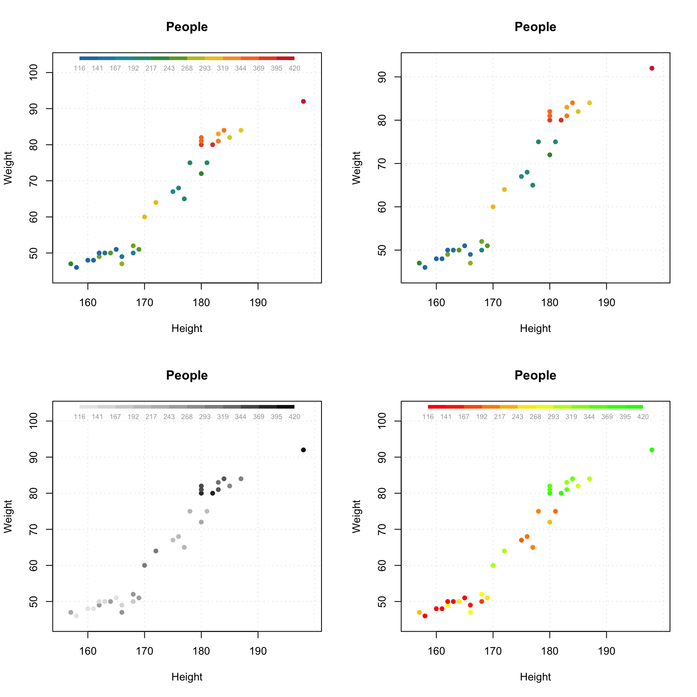
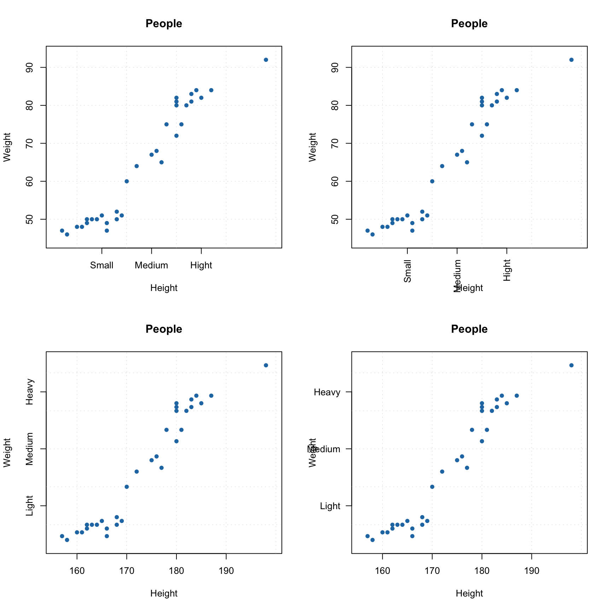
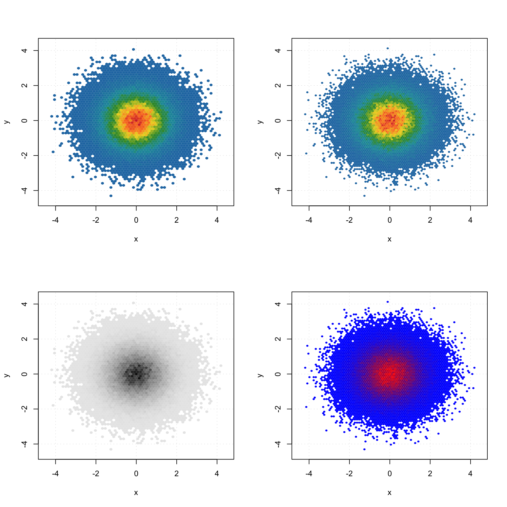
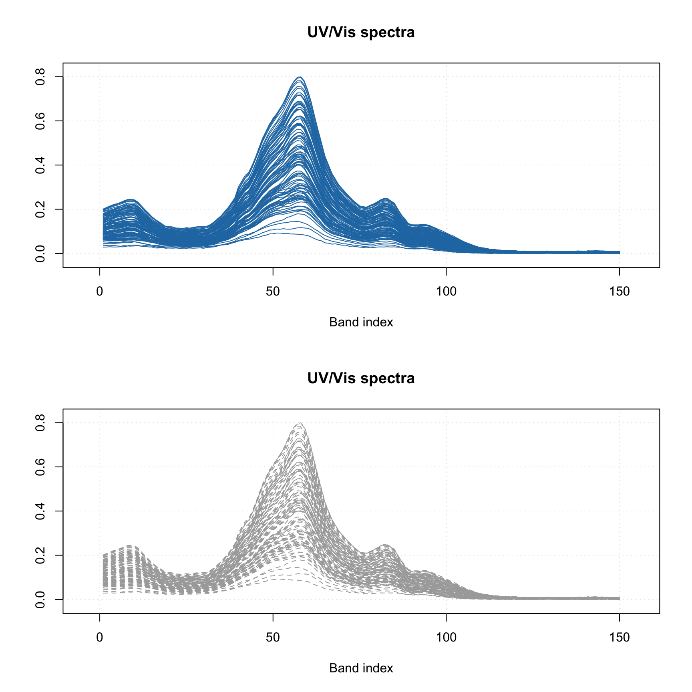
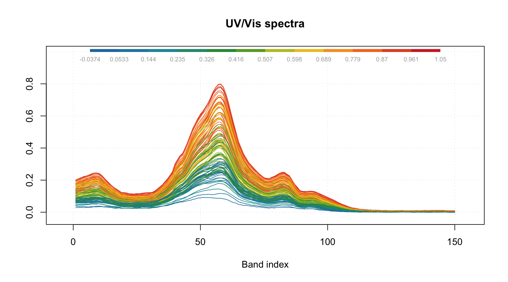
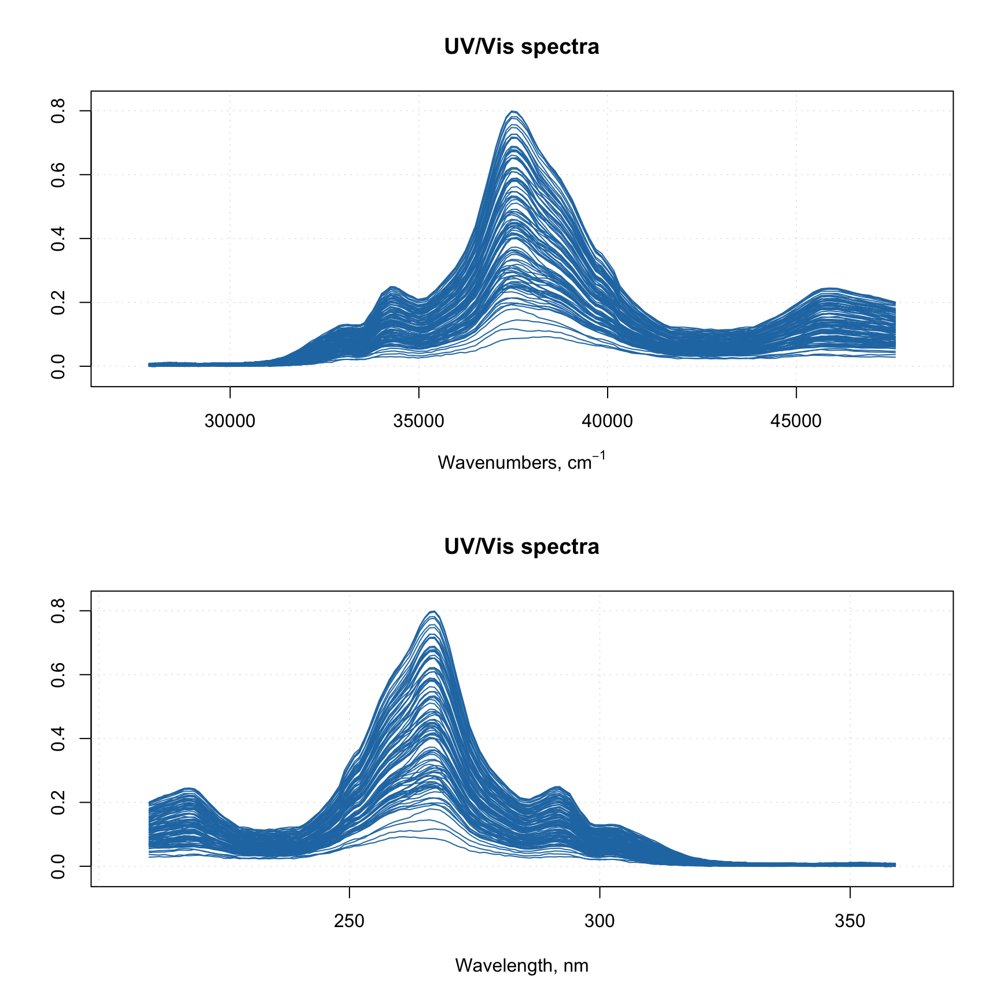
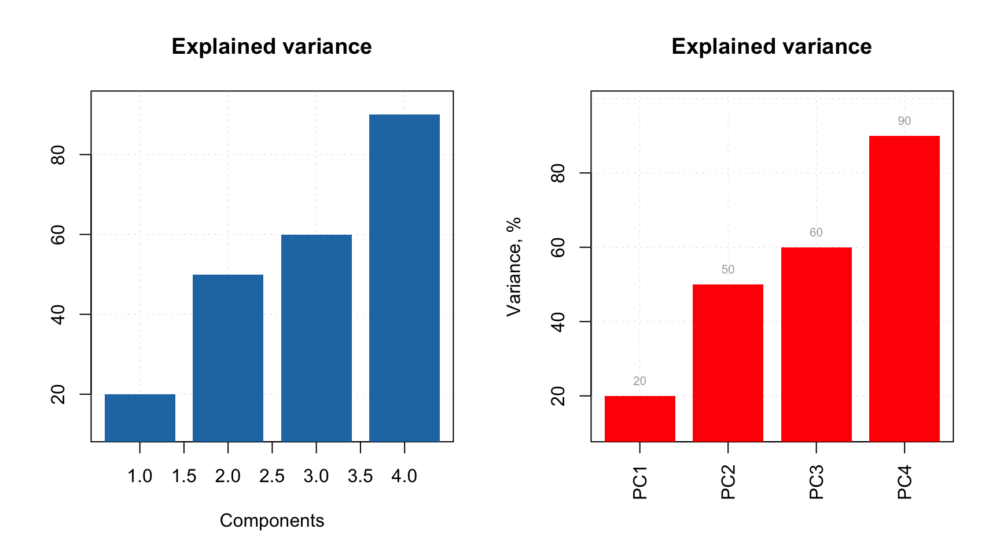
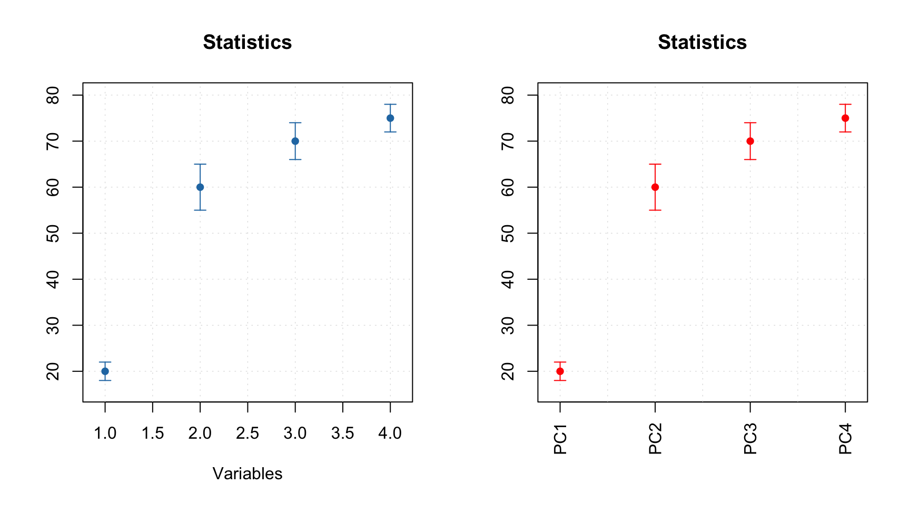
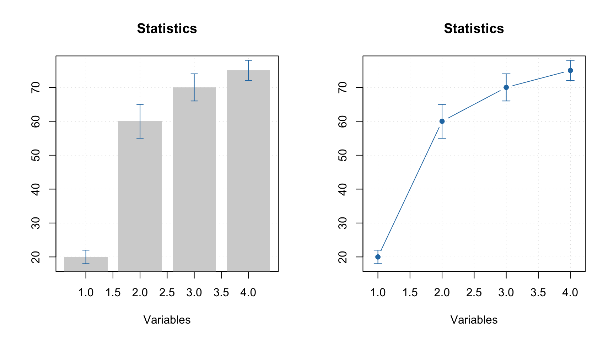

Simple plots
As it was already mentioned, mdatools has its own functions for plotting with several extra options not available in basic plot tools. These functions are used to make all plots in the models and results (e.g. scores, loadings, predictions, etc.) therefore it can be useful to spend some time and learn the new features (e.g. coloring data points with a vector of values or using manual ticks for axes). But if you are going to make all plots manually (e.g. using ggplot2) you can skip this and the next sections.
In this section we will look at how to make simple plots from your data objects. Simple plots are scatter (type = "p"), density-scatter (type = "d"), line (type = "l"), line-scatter (type = "b"), bar (type = "h") or errorbar (type = "e") plots made for a one set of objects. All plots can be created using the same method mdaplot() by providing a whole dataset as a main argument. Depending on a plot type, the method “treats” the data values differently.
This table below contains a list of parameters for mdaplot(), which are not available for traditional R plots. In this section we will describe most of the details using simple examples.
| Parameter | Description |
|---|---|
cgroup |
a vector of values (same as number of rows in data) used to colorize plot objects with a color gradient. |
colmap |
color map for the color gradient (possible values are 'default', 'gray'
or a vector with colors). |
show.colorbar |
when color grouping is used, mdaplot() shows a color bar legend, this
parameter allows to turn it off. |
show.labels |
logical parameter showing labels beside plot objects (points, lines, etc).
Size and color of labels can be adjusted using parameters lab.cex and lab.col. |
labels |
parameter telling what to use as labels (by default row names, but can also be indices or manual values). |
lab.col |
color for the labels. |
lab.cex |
font size for the labels (as a scale factor). |
xticks |
vector with numeric values to show the x-axis ticks at. |
yticks |
vector with numeric values to show the y-axis ticks at. |
xticklabels |
vector with labels (numbers or text) for the x-ticks. |
yticklabels |
vector with labels (numbers or text) for the y-ticks. |
xlas |
an integer between 0 and 3 telling at which angle the x-tick labels have to be shown. |
ylas |
an integer between 0 and 3 telling at which angle the y-tick labels have to be shown. |
show.axes |
logical, if TRUE, function will make a new plot, if FALSE, add the plot
objects to a previous one. |
show.lines |
a vector with two numbers — position of horizontal and vertical lines on a plot (e.g. coordinate axes). |
show.grid |
logical, show or not a grid. It places grid behind the plot object in contrast
to conventional grid() method. Use grid.lwd and grid.col parameters to
adjust the grid look. |
show.excluded |
logical, show or not points or lines corresponded to the excluded rows. |
opacity |
opacity of colors in range 0…1 (applied to all colors of current plot). |
Scatter plots
We will use people dataset for illustration how scatter plots work (see ?people for details).
data(people)
attr(people, "name") = "People"
attr(people, "xaxis.name") = "Variables"
attr(people, "yaxis.name") = "Persons"For scatter plots the method takes first two columns of a dataset as x and y vectors. If only one column is available mdaplot() uses it for y-values and generate x-values as an index for each value.
par(mfrow = c(1, 2))
# show plot for the whole dataset (columns 1 and 2 will be taken)
mdaplot(people, type = "p")
# subset the dataset and keep only columns 6 and 7 and then make a plot
mdaplot(mda.subset(people, select = c(6, 7)), type = "p")All parameters, available for the standard points() method will work with mdaplot() as well. Besides that, you can colorize points according to some values using a color gradient. By default, the gradient is generated using one of the diverging color schemes from colorbrewer2.org, but this can be changed using parameter colmap as it is shown below.
par(mfrow = c(2, 2))
# show Height vs Weight and color points by the Beer consumption
mdaplot(people, type = "p", cgroup = people[, "Beer"])
# do the same but do not show colorbar
mdaplot(people, type = "p", cgroup = people[, "Beer"], show.colorbar = FALSE)
# do the same but use grayscale color map
mdaplot(people, type = "p", cgroup = people[, "Beer"], colmap = "gray")
# do the same but using colormap with gradients between red, yellow and green colors
mdaplot(people, type = "p", cgroup = people[, "Beer"], colmap = c("red", "yellow", "green"))
If the vector with values for color grouping is a factor, level labels will be shown on a colorbar legend and there will be a small margin between bars.
# make a factor using values of variable Sex and define labels for the factor levels
g = factor(people[, "Sex"], labels = c("Male", "Female"))
par(mfrow = c(1, 2))
mdaplot(people, type = "p", cgroup = g)
mdaplot(people, type = "p", cgroup = g, colmap = "gray")If you use point characters from 21 to 25 (the ones which allow to specify both color of border and
background of the marker symbol), then the cgroup is applied to color of the borders of the symbols by default.
If you want to apply it to background color, use logical parameter pch.colinv for that as shown below:
par(mfrow = c(1, 2))
# default way - color grouping is used for borders and "bg" for background
mdaplot(people, type = "p", cgroup = people[, "Beer"], pch = 21, bg = "white")
# inverse - color grouping is used for background and "bg" for border
mdaplot(people, type = "p", cgroup = people[, "Beer"], pch = 21, bg = "white", pch.colinv = TRUE)Another useful option is adding labels to the data points. By default row names will be taken for the labels but you can specify a parameter labels, which can be either a text ("names" or "indices") or a vector with values to show as labels. Color and size of the labels can be adjusted.
par(mfrow = c(2, 2))
# by default row names will be used as labels
mdaplot(people, type = "p", show.labels = TRUE)
# here we tell to use indices as labels instead
mdaplot(people, type = "p", show.labels = TRUE, labels = "indices")
# here we use names again but change color and size of the labels
mdaplot(people, type = "p", show.labels = TRUE, labels = "names", lab.col = "red", lab.cex = 0.5)
# finally we provide a vector with manual values to be used as the labels
mdaplot(people, type = "p", show.labels = TRUE, labels = paste0("O", seq_len(nrow(people))))You can also manually specify axis ticks and tick labels. The labels can be rotated using parameters xlas and ylas, see the examples below. It is important though, that if you provide manual values for the tick labels you must also provide a vector of values with the positions the labels should be shown at. And, of course, the two vectors must
have the same number of values.
par(mfrow = c(2, 2))
# manual values and tick labels for the x-axis
mdaplot(people, xticks = c(165, 175, 185), xticklabels = c("Small", "Medium", "Hight"))
# same but with rotation of the tick labels
mdaplot(people, xticks = c(165, 175, 185), xticklabels = c("Small", "Medium", "Hight"), xlas = 2)
# manual values and tick labels for the y-axis
mdaplot(people, yticks = c(55, 70, 85), yticklabels = c("Light", "Medium", "Heavy"))
# same but with rotation of the tick labels
mdaplot(people, yticks = c(55, 70, 85), yticklabels = c("Light", "Medium", "Heavy"), ylas = 2)
If both axis labels and rotated axis ticks have to be shown, you can adjust plot margins and position of the label using par() function and mtext() for positioning axis label manually.
par(mfrow = c(1, 2))
# change margin for bottom part
par(mar = c(6, 4, 4, 2) + 0.1)
mdaplot(people, xticks = c(165, 175, 185), xticklabels = c("Small", "Medium", "Hight"),
xlas = 2, xlab = "")
mtext("Height", side = 1, line = 5)
# change margin for left part
par(mar = c(5, 6, 4, 1) + 0.1)
mdaplot(people, yticks = c(55, 70, 85), yticklabels = c("Light", "Medium", "Heavy"),
ylas = 2, ylab = "")
mtext("Weight", side = 2, line = 5)There is also a couple of other parameters, allowing to show/hide grid as well as show horizontal and vertical lines on the plot (axes limits will be adjusted correspondingly).
par(mfrow = c(1, 2))
mdaplot(people, show.grid = FALSE, show.lines = c(170, 65))
mdaplot(people, show.lines = c(220, NA))Function mdaplot() can also return plot series data, which can be used for
extra options. For example, in case of scatter plot you can add confidence ellipse or convex
hull for data points. To do this, points must be color grouped by a factor as shown below. For confidence ellipse you can specify the confidence level (default 0.95).
# define a factor using values of variable Sex and simple labels
g = factor(people[, "Sex"], labels = c("M", "F"))
par(mfrow = c(1, 2))
# make a scatter plot grouping points by the factor and then show convex hull for each group
p = mdaplot(people, cgroup = g)
plotConvexHull(p)
# make a scatter plot grouping points by the factor and then show 90% confidence intervals
p = mdaplot(people, cgroup = g)
plotConfidenceEllipse(p, conf.level = 0.90)In case when number of data points is large (e.g. when dealing with images, where every pixel is a data point), using density plot is a good alternative to conventional scatter plots. The plot does not show all data points but instead split the whole plot space into small hexagonal regions and use color gradient for illustration a density of the points in each region. This approach is known as hexagonal binning. To create a density plot simply use type="d". You can also specify color map and number of bins along each axes (nbins).
The code below show an example of using density plots for 100000 data points with x and y values taken from normally distributed population.
x = rnorm(100000)
y = rnorm(100000)
d = cbind(x, y)
par(mfrow = c(2, 2))
mdaplot(d, type = "d")
mdaplot(d, type = "d", nbins = 80)
mdaplot(d, type = "d", colmap = "gray")
mdaplot(d, type = "d", nbins = 80, colmap = c("blue", "red"))
Line plots
When line plot is created, the mdatools() shows a line plot for every row of the provided dataset. So if data set has more than one row, the plot will show a bunch of lines having same properties (color, type, etc). This is particularly useful when working with signals and spectroscopic data. In this subsection we will use simulated UV/Vis spectra from simdata. See ?simdata for more details about this set.
data(simdata)
# get the calibration spectra, wavelength and
# concentration of first component as separate variables
spectra = simdata$spectra.c
wavelength = simdata$wavelength
conc = simdata$conc.c[, 1]
# add names as attributes
attr(spectra, "name") = "UV/Vis spectra"
attr(spectra, "xaxis.name") = "Band index"Here are simple examples of how to make the line plots.
par(mfrow = c(2, 1))
mdaplot(spectra, type = "l")
mdaplot(spectra, type = "l", col = "darkgray", lty = 2)
Most of the parameters described for scatter plots will work for the line plots as well. For example, you can colorise the lines by using a vector with some values (in the example below I use concentration of one of the chemical components).
par(mfrow = c(1, 1))
mdaplot(spectra, type = "l", cgroup = conc)
And of course you can use the attributes, allowing to provide manual x-values — 'xaxis.values' (similar parameter for y-values is 'yaxis.values'). In the example below we show the spectra using wavelength in nm and wavenumbers in inverse cm.
par(mfrow = c(2, 1))
attr(spectra, "xaxis.name") = expression("Wavenumbers, cm"^-1)
attr(spectra, "xaxis.values") = 10^7/wavelength
mdaplot(spectra, type = "l")
attr(spectra, "xaxis.name") = "Wavelength, nm"
attr(spectra, "xaxis.values") = wavelength
mdaplot(spectra, type = "l")
When you provide such data to any model methods (e.g. PCA, PLS, etc), then all variable related results (loadings, regression coefficients, etc.) will inherit this attribute and use it for making line plots.
Bar and errorbar plots
Bar plot is perhaps the simplest as it shows values for the first row of the data as bars. Let us start with simple dataset, where we have a matrix with explained variance of a data from e.g. PCA decomposition.
# make a simple two rows matrix with values
d = rbind(
c(20, 50, 60, 90),
c(14, 45, 59, 88)
)
# add some names and attributes
colnames(d) = paste0("PC", 1:4)
rownames(d) = c("Cal", "CV")
attr(d, "xaxis.name") = "Components"
attr(d, "name") = "Explained variance"
par(mfrow = c(1, 2))
# make a default bar plot
mdaplot(d, type = "h")
# make a bar plot with manual xtick labels, color and labels for data values
mdaplot(d, type = "h", xticks = seq_len(ncol(d)), xticklabels = colnames(d), col = "red",
show.labels = TRUE, labels = "values", xlas = 2, xlab = "", ylab = "Variance, %")
As you can notice, the values from the second rows were ignored, as bar plot always takes the first row.
Errorbar plot, in contrast, always expect data to have two or three rows. The first row is the origin points of the error bars, second row is the size of the bottom error bar and the third row is the size of the top error bar. If data has only two rows the both parts will be symmetric related to the origin.
# generate some mean and standard deviation values and combine them as rows of a matrix
d = rbind(
c(20, 60, 70, 75),
c(2, 5, 4, 3)
)
# add names and attributes
rownames(d) = c("Mean", "Std")
colnames(d) = paste0("PC", 1:4)
attr(d, 'name') = "Statistics"
# show the plots
par(mfrow = c(1, 2))
mdaplot(d, type = "e")
mdaplot(d, type = "e", xticks = seq_len(ncol(d)),
xticklabels = colnames(d), col = "red", xlas = 2, xlab = "")
All simple plots can be combined together on the same axes. In this case, first plot is created as usual and all other plots have to be created with option show.axes = FALSE as it is shown below. It must be noted that in this case axes limits have to be set manually when creating the first plot.
par(mfrow = c(1, 2))
mdaplot(mda.subset(d, 1), type = "h", col = "lightgray")
mdaplot(d, type = "e", show.axes = FALSE, pch = NA)
mdaplot(mda.subset(d, 1), type = "b")
mdaplot(d, type = "e", show.axes = FALSE)
In the next section we will discuss plots for several groups of objects (rows).